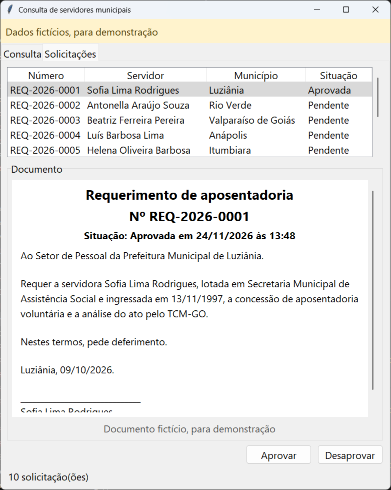
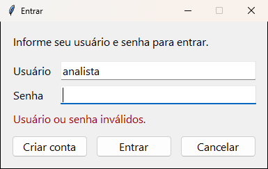
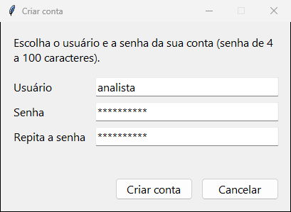
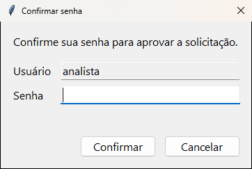
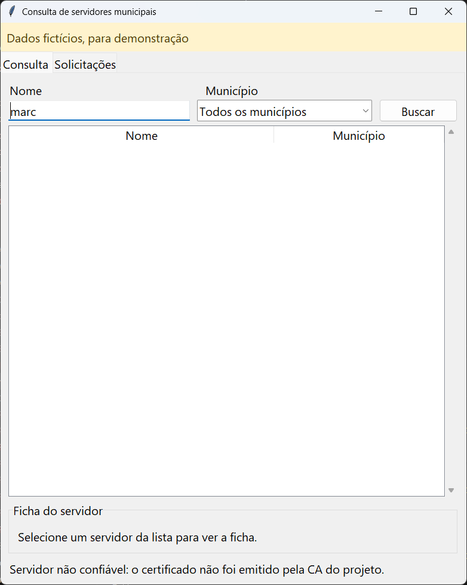
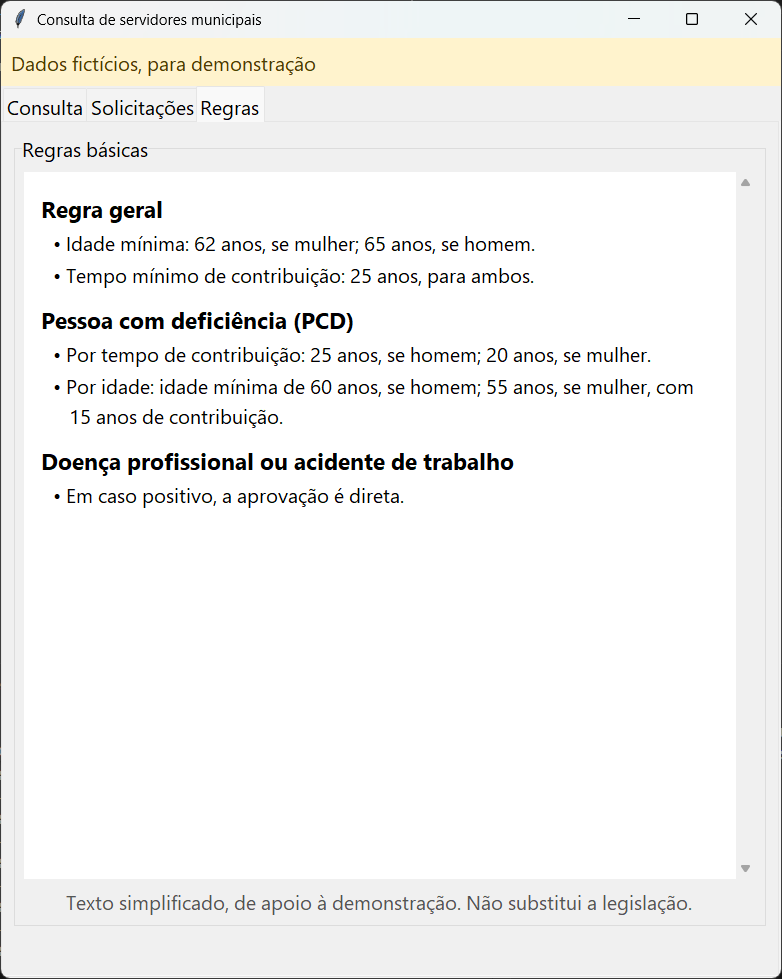

Projeto Integrador III-A · Análise e Desenvolvimento de Sistemas · PUC Goiás
Estudante: Fhilipe Rodrigues · Professor: Thalles Bruno G. N. dos Santos · Goiânia, 2026
O Tribunal de Contas dos Municípios do Estado de Goiás (TCM-GO) é o órgão de controle externo que fiscaliza a aplicação dos recursos públicos pelos municípios goianos. Entre as suas atividades está a apreciação, para fins de registro, da legalidade dos atos de pessoal dos municípios, como admissões, aposentadorias e pensões.
O projeto foi feito para a Secretaria de Atos de Pessoal, unidade em que o estudante trabalha e que examina esses atos. A representante da instituição é a Juliana, chefe imediata do estudante, que assinou o Termo de Formalização do Convênio.
Para analisar um pedido de aposentadoria, o analista precisa reunir a situação funcional do servidor: idade, tempo de contribuição, órgão, data de ingresso, remuneração e condições especiais, como deficiência (PCD) ou doença profissional. Os servidores pertencem a municípios diferentes, e essas informações ficam em fontes separadas. A consulta é lenta e sujeita a erro, sobretudo quando o analista não lembra a grafia exata do nome.
A solução proposta é uma aplicação de consulta em que o analista busca o servidor por parte do nome, restringe a busca a um município, abre a ficha com os dados da análise e registra a decisão sobre o requerimento. Como a aplicação trata dados pessoais, o protótipo usa uma base fictícia de 10 municípios goianos e 50 servidores, gerada por script com semente fixa. Assim nenhum dado real do TCM-GO é exposto, em linha com a LGPD, e a base pode ser recriada igual em qualquer máquina.
O sistema foi escrito em Python usando só a biblioteca padrão (socket, ssl, threading, tkinter, hashlib), então roda sem instalar pacotes. O servidor carrega a base de um arquivo JSON e atende cada conexão em uma thread própria, o que permite vários clientes ao mesmo tempo. O cliente é uma janela Tkinter. Cada ação na janela abre uma conexão, envia uma linha JSON com a operação, recebe uma linha JSON com a resposta e fecha a conexão. As chamadas de rede rodam fora da thread da janela, que continua respondendo mesmo se o servidor cair.
| Operação | O que o servidor devolve |
|---|---|
| municipios, buscar, ficha | lista de municípios, servidores encontrados e ficha com os cálculos |
| solicitacoes, documento | lista dos requerimentos e o documento de um deles |
| decidir | grava Aprovada ou Desaprovada, depois de conferir usuário e senha |
| regras, login, criar_conta | texto das regras; confere a credencial; cria a conta |
Pedidos inválidos recebem uma resposta de erro com código (por exemplo, REQUISICAO_INVALIDA ou OPERACAO_DESCONHECIDA) e não afetam as outras conexões.
ssl. Um script usa o OpenSSL para criar uma CA local (RSA 2048, SHA-256) e o certificado do servidor, assinado por ela. O cliente só confia nessa CA, confere o nome do servidor no certificado e não aceita versão anterior ao TLS 1.2; nos testes, a conexão usou TLS 1.3. As chaves privadas ficam fora do repositório..env, fora do repositório). A conta só pode ser criada uma vez. Usuário ou senha errados recebem sempre a mesma mensagem, depois de uma pausa de 1 segundo, o que dificulta tentativas em série.As capturas abaixo foram feitas com o servidor e a janela reais, comunicando por TLS 1.3. A faixa amarela na janela avisa que os dados são fictícios.






A Figura 6 é a prova do mecanismo de segurança: um segundo servidor, com certificado emitido por outra CA, ficou no ar e respondia por TLS, mas o cliente recusou o aperto de mão e mostrou "Servidor não confiável". Nenhum dado foi trocado.
O projeto tem 272 testes automatizados, todos passando (um é pulado por valer só em sistemas POSIX). Eles cobrem os cálculos da ficha, a busca, o protocolo, a geração dos certificados, a comunicação real por TLS (incluindo duas consultas simultâneas e a recusa da CA falsa), o login, a criação de conta, a gravação das decisões e a janela. Um teste confere que todo import vem da biblioteca padrão.
[A PREENCHER PELO ESTUDANTE: data, com quem, o que foi mostrado e as considerações ou sugestões recebidas. Se a demonstração não acontecer, substituir por um relato fiel da interação com a instituição.]
Resultados alcançados. O protótipo atende ao que a proposta pede: um servidor que guarda as informações e responde por rede, um cliente que consulta e apresenta os dados de forma organizada, execução local sem banco de dados e comunicação protegida por TLS com uma cadeia de confiança própria. O fluxo de solicitações vai um passo além: o analista registra a decisão sobre cada requerimento, confirmada com a senha.
Dificuldades encontradas. A partir do Python 3.13, a verificação de certificados é mais rígida e recusa certificados sem certas extensões. Em vez de desligar a verificação, a CA e o servidor foram emitidos com as extensões exigidas (restrições básicas, uso de chave e nome alternativo). O Tkinter não aceita chamadas de outras threads, então as respostas da rede passam por uma fila lida pela janela. No Windows, a conversão automática de fim de linha do Git alterava a base de dados baixada e quebrava a comparação byte a byte do teste de reprodutibilidade; um arquivo .gitattributes resolveu.
Possíveis melhorias. Integração com as bases reais do TCM-GO, com o tratamento de dados pessoais adequado; vários usuários com perfis e cadastro feito por um administrador; acesso pela rede interna do órgão, com o cliente em outro computador; e histórico das decisões, com quem decidiu e quando.